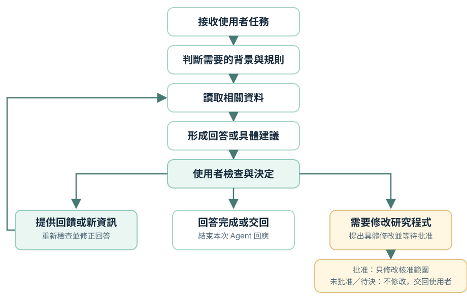

PERSONAL KNOWLEDGE BASE
Harvey LLM Wiki
以可追溯的資料與相互連結的主題，整理 Harvey 作為研究助理的架構和工作方式。
已 ingest 6 份來源 · 逐份確認中目前已整理 6 份 Harvey 文件；若繼續納入其他資料，仍須逐份討論並確認。
WIKI INDEX
主題索引
Harvey 的定位 →
工作空間的用途與邊界。
記憶與資料選讀 →
相關背景如何保存、選讀與核對。
Agent 與使用者 →
任務協助、批准與最終判斷的分工。
Agent 工作流程與回饋 →
任務、判斷、回饋、批准與交回。
跨模型交接 →
文件與 Git 的作用，以及不同工具之間的限制。
資訊可信度 →
區分當前資訊、歷史摘要與 AI 推論。
操作權限 →
修改前批准與分析執行的界線。
系統改善 →
以需求與驗收標準驅動有界改善。
研究驗證流程 →
釐清假設、唯讀檢視、授權與獨立驗證。
獨立理論審查 →
從假設重新推導，並處理盲審的資訊隔離。
CONCEPT 01
Harvey 的定位
Harvey 是個人 AI 研究助理的工作空間，提供背景與工作流程，讓 Agent 在任務中有可參考的資訊。它不是自行訓練的模型，也不是能自行運作的多 Agent 協調系統。
這份作業以研究助理為展示範圍；原始工作空間可支援的其他用途不在此展開。
來源：來源 01・工作空間概覽 · Markdown 條目
CONCEPT 02
記憶與資料選讀
Harvey 將可重用的背景與工作流程寫在文件中。Agent 處理專案任務時，選讀與當前問題相關的資料；不應把流程模板視為自動執行操作的許可。
AI 系統架構進一步建議以 Markdown 和 Git 歷史保存背景，而不是只依賴聊天；角色指示應保持精簡並按需要載入背景。
文件中的筆記可能錯誤或過時，因此仍需要與可核對的當前資料比較；有日期的紀錄互相衝突時，應指出差異，而非自行猜測。
來源：來源 01、來源 02、來源 03 · Markdown 條目
CONCEPT 03
Agent 與使用者
Agent 可以利用可用背景協助理解任務、討論問題並提出建議。使用者負責科學判斷、相關操作的批准，以及最終檢查與解讀。
不同模型的角色分工是可調整的初始安排，而不是固定或自動執行的規則。使用者仍負責資料的手動驗證與正式分析的執行。
交接流程中，使用者處理審查分歧，並決定是否批准具體修改。
讀取背景或使用工作流程模板，本身不代表 Agent 已獲准進行所有操作。對正式研究程式，應先提出具體修改並取得使用者批准；未經明確授權，不執行科學分析。
WORKFLOW / LOOP
Agent 工作流程與回饋
以下概念圖依工作空間的角色分工、資料選讀與操作權限整理；不是已部署或自動強制執行的程式。

- 接收使用者任務，判斷需要哪些背景、規則與讀取權限。
- 讀取相關資料，形成回答或具體建議，交給使用者檢查。
- 使用者提供回饋或新資訊時，回到資料檢查並修正；回答完成或需要使用者處理時，結束本次回應或交回。
- 若需要修改正式研究程式，先提出具體修改並等待批准；未批准或尚未決定時不修改。批准後只處理核准範圍，科學分析仍需明確授權。
這是對工作規則的綜合說明，不代表已執行科學分析或驗證結果。可在教學展示頁的流程圖查看同一張圖與解說。
來源：來源 01、來源 02、來源 04 · Markdown 條目
CONCEPT 04
跨模型交接
不同 AI 工具或模型不會因為共用 Git 儲存庫，自動共享對話或啟動協作。文件可以作為有意識的交接媒介；某個模型是否能讀到文件，取決於使用者提供資料的方式與該工具的實際存取能力。
Git 可保存文件版本，但不等於模型之間的聊天訊息系統，也不會自行執行 Agent。
不同對話取得資料仍需要支援的連接方式、相容的本地檔案工具，或由使用者刻意提供資料與交接。
若交接用於盲審，審查者第一輪只能收到受限資料；分開檔案本身不代表實際存取已隔離。
任務交接可以精簡記錄目標、假設、限制、審查及使用者決定；交接記錄不取代實際檢查或科學驗證。
來源：來源 01、來源 03、來源 05、來源 06 · Markdown 條目
CONCEPT 05
資訊可信度
Agent 應區分使用者的當前指示、可核對的現行資料、帶有日期的背景摘要，以及 AI 自身的推論。AI 推論必須標明，不應冒充已驗證的事實。
若歷史紀錄互相衝突，應指出差異並核對現行資訊；不應自行猜測哪一份正確。這也呼應工作空間概覽對過時或錯誤筆記的提醒。
多個模型意見一致不代表結論正確；應透過外部參考、簡化測試、恆等性和已知極限等獨立方法檢查。
研究驗證流程也要求引用數值時標明來源，並區分已知事實、疑點與尚待執行的驗證。
CONCEPT 06
操作權限
詢問是否可行或如何修改，不等於批准操作。對正式研究程式，Agent 需先提出具體修改並取得使用者明確批准；未經明確授權，不執行科學分析。
這些是文件所描述的工作規則，不代表已有程式層級的自動強制機制。實際任務仍需依當前要求、適用規則和工具權限處理。
來源：來源 02、來源 04 · Markdown 條目
CONCEPT 07
系統改善
系統改善應回應反覆出現的問題、具體需求或可衡量的機會，而不是為了增加工具而增加工具。
先定義小型成果與驗收標準，再執行有界修改並審核差異。使用者評估結果後，決定採用、修訂或捨棄，並記錄日期與理由；必要操作仍需符合權限規則。
來源：來源 03・AI 系統架構 · Markdown 條目
CONCEPT 08
研究驗證流程
處理研究問題時，先釐清目標與科學假設，確認輸入及預期結果；資訊不足時標明不確定性。
Agent 預設先以唯讀方式檢視，說明可能問題及其影響並提出具體建議。修改正式研究程式前需使用者批准；執行科學分析需明確授權。
驗證應包含具有獨立預期結果的簡化測試或解析極限，而不是只檢查模型輸出是否自洽。引用的數值應有可追溯來源。流程建議分開呈現已知事實、疑點、修改建議、使用者待執行的驗證及不確定性。
這是文件描述的工作流程，交接記錄不取代實際檢查或科學驗證；記錄流程不代表這些檢查已經執行，也不等同科學結論已驗證。
來源：來源 04、來源 06；獨立驗證亦見 來源 03 · Markdown 條目
CONCEPT 09
獨立理論審查
審查前應明確列出待檢查的主張、定義、單位、參數範圍、假設及推導，並提供獨立已知的基準。
審查者從假設重新推導，不以先前模型結論為前提；檢查量綱、極限、符號、正規化與遺漏項，提出可區分不同解釋的觀測或計算測試。結果應區分已確立內容、近似與尚未驗證的事項。
採用盲審時，先提供受限制的審查資料，記錄審查者第一輪結果後才分享先前的模型結論。分開的審查檔案本身不能保證隔離；是否獨立取決於實際提供與可存取的資訊。
一般審查可以參考其他意見和先前討論；如果無法確認審查者只收到盲審資料，就應記錄為一般審查並說明原因。
多個模型同意不構成獨立物理證據；仍需解析檢查、文獻及可重現的數值測試。這是建議的審查流程，不代表此處已實施盲審或完成科學驗證。
來源：來源 05、來源 03、來源 06 · Markdown 條目
SOURCE 01
來源摘要：工作空間概覽
原始來源：Harvey 根目錄的 README.md，標示日期 2026-10-30。
Ingest 日期：2026-11-15。
本次整理四個經確認的主題：工作空間定位、相關背景選讀、Agent 與使用者分工，以及跨模型交接的限制。
為保護隱私，作業資料夾只保留審核後摘錄；它不是完整原始文件。原始來源保留於原位，未因 ingest 修改。
SOURCE 02
來源摘要：Agent 工作協議
原始來源：Harvey 根目錄的 AGENTS.md，版本 2026-10-30。
Ingest 日期：2026-11-15。
本次整理通用角色、資訊可信度、操作權限與背景選讀；其他未經確認的私人與研究細節不納入。
作業資料夾只保留審核後摘錄，不是完整原文；原始來源保留於原位，未因 ingest 修改。
SOURCE 03
來源摘要：AI 系統架構
原始來源：Harvey 的 context/ai-system.md，架構提出於 2026-10-30。
Ingest 日期：2026-11-15。
整理持久背景、可調整的角色、獨立驗證、使用者權限、文件交接與有界改善。原文件將系統定位為文件基礎，而非已部署的自動協作系統。
作業資料夾只保留審核後摘錄，不是完整原文；原始來源保留於原位，未因 ingest 修改。
SOURCE 04
來源摘要：研究驗證流程
原始來源：Harvey 的 workflows/research-validation.md。
Ingest 日期：2026-11-15。
整理釐清問題、唯讀檢視、操作授權、獨立驗證與結果分類等經確認的通用原則。
作業資料夾只保留審核後摘錄，不是完整原文；原始來源保留於原位，未因 ingest 修改。
SOURCE 05
來源摘要：獨立理論審查
原始來源：Harvey 的 workflows/theory-review.md。
Ingest 日期：2026-11-15。
整理審查輸入、重新推導、結果分類、盲審及獨立驗證；分開檔案本身不保證盲審資訊隔離。
作業資料夾只保留審核後摘錄，不是完整原文；原始來源保留於原位，未因 ingest 修改。
SOURCE 06
來源摘要：任務交接流程
原始來源：Harvey 的 handoffs/README.md。
Ingest 日期：2026-11-15。
整理任務交接、審查模式、資訊隔離、使用者決定及驗證界線等通用原則。
作業資料夾只保留審核後摘錄，不是完整原文；原始來源保留於原位，未因 ingest 修改。
CURATED EXCERPTS
審核後來源摘錄
以下是原始來源中與本次四個主題相關的英文原文片段，並非完整原文。
A vendor-neutral, Git-friendly context and workflow foundation for ChatGPT/Codex, Claude Code, and Grok.
This is not a trained model or functioning multi-agent orchestrator.
Load only the relevant file under projects/ when working on a specific project.
Use workflows/ as optional, explicit task templates rather than automatic execution permissions.
scientific ownership, approval of code modifications and execution, final acceptance and interpretation.
Models do not automatically share state: files are the handoff mechanism. Git stores versions, not conversation state, and does not itself run agents.
Model notes can be wrong or stale.
SOURCE 02 · CURATED EXCERPTS
來源 02 審核後摘錄
以下是工作協議中經審核的英文原文片段，不是完整原文。
Current explicit user request and user-confirmed decisions.
Actual up-to-date repository files, run outputs, logs, and verified paper data (where authorized and accessible).
AI inference: label it as inference, never pretend it is a measured or established result.
If dated records conflict, state the conflict and inspect actual files or ask only when a material ambiguity blocks progress.
For production/analysis code, propose exact edits and obtain explicit approval before modifying files.
A question about feasibility is not approval.
Do not execute scientific analysis scripts without explicit authorization.
Load only the documents required for the current task.
Read task files and project context as needed.
SOURCE 03 · CURATED EXCERPTS
來源 03 審核後摘錄
以下是 AI 系統架構文件中經審核的英文原文片段，不是完整原文。
Persistent written context lives in plain Markdown and Git history, not solely in chats.
Avoid one enormous all-purpose prompt. Keep small role instructions and load project context only when relevant.
The user remains final scientific authority, responsible for manual data validation and production execution.
Initial model roles (flexible hypotheses)
Never assume multi-model agreement equals correctness. Models should independently check against external references, toy results, invariants and known limits.
A local Git repo is a common file store and history, not a cross-provider chat bus.
A conversation needs an upload, connector, compatible local file tool, or deliberate handoff to read repository files.
Upgrade only when there is a repeated failure, concrete need, or useful measurable opportunity.
Define a small deliverable and acceptance criterion.
Implement one bounded change; review the diff.
Adopt, revise or discard. Record date and rationale.
SOURCE 04 · CURATED EXCERPTS
來源 04 審核後摘錄
以下是研究驗證流程中經審核的英文原文片段，不是完整原文。
read-only analysis and recommendations.
Restate the scientific assumption and expected numerical invariant. If underspecified, label the ambiguity.
Prioritize concrete defects and their consequences; show minimal proposed fix. Do not edit unless user approves.
Propose an independent expected-value toy example/analytic limit. Leave execution of scientific macros to user unless explicitly requested.
Known facts | Suspected issues | Proposed exact change | Validation to be performed by user | Uncertainty
At least one calculation/limit that is independent of model self-consistency.
Identified provenance for each quoted numerical result.
SOURCE 05 · CURATED EXCERPTS
來源 05 審核後摘錄
以下是獨立理論審查文件中經審核的英文原文片段，不是完整原文。
Precise claim, physical system, definitions, units and parameter ranges.
Assumptions approximations, data regime and nuisance parameters.
The derivation or algorithm to critique, and independently known benchmark(s).
Share earlier model conclusions only after the reviewer's first pass is recorded.
Re-derive from assumptions without using the previous model's conclusion as an axiom.
Check dimensions, limiting behavior, signs, normalization and missing terms.
Identify observational or computational tests that distinguish competing possibilities.
Flag what is an approximation, what is well established, and what remains unverified.
agreement across LLMs is not independent physical evidence; use analytic checks, literature and reproducible numerical tests.
SOURCE 06 · CURATED EXCERPTS
來源 06 審核後摘錄
以下是任務交接文件中經審核的英文原文片段，不是完整原文。
Keep files concise; link to detailed project files instead of copying them.
The user resolves disagreements and records explicit approval
The user runs scientific analysis and validates outputs.
The first pass is produced from a separate, restricted input packet and nothing else, following the procedure below.
Putting reviews in separate files does not by itself make any review blind.
The review is blind only if the reviewer actually received the packet and nothing else.
If that cannot be confirmed, record Review mode: ordinary with the reason; the review is still useful, but not independent.
A handoff is never a substitute for actual code inspection or scientific verification.
INGEST LOG
Ingest 日誌
2026-11-15 · 來源 01：工作空間概覽
讀取並整理第一份來源；建立來源摘錄、摘要與四個互相連結的主題，更新索引與日誌。原始文件未修改。
2026-11-15 · 來源 02：Agent 工作協議
建立來源摘錄與摘要，新增資訊可信度與操作權限條目，並更新記憶與使用者分工頁面及索引。原始文件未修改。
2026-11-15 · 來源 03：AI 系統架構
建立來源摘錄、摘要與系統改善條目，更新記憶、分工、可信度與交接等主題及索引。原始文件未修改。
2026-11-15 · 來源 04：研究驗證流程
建立來源摘錄、摘要與研究驗證流程條目，更新分工、可信度、權限及索引。原始文件未修改。
2026-11-15 · 來源 05：獨立理論審查
建立來源摘錄、摘要與理論審查條目，更新研究驗證、資訊可信度、跨模型交接及索引。原始文件未修改。
2026-11-15 · 來源 06：任務交接流程
建立來源摘錄與摘要，更新跨模型交接、理論審查、使用者分工、研究驗證及索引。原始文件未修改。
2026-11-15 · 維護：工作流程圖與展示頁連結
整合既有流程圖，新增工作流程主題及 Wiki 與展示頁的雙向連結；未新增來源。
目前已完成 6 份；其他來源尚待逐份討論與確認。
WIKI SCHEMA
Wiki 如何維護
- 逐份討論來源，確認可納入的內容。
- 讀取原始資料而不修改；摘錄需標明來源與不完整性。
- 建立來源摘要，更新相關主題、交叉連結與來源標註。
- 更新索引、追加日誌，並同步 HTML 瀏覽頁。
- 檢查斷鏈、過時資訊與來源間的矛盾。
公開或分享前，仍需由使用者審核。完整規則見 Markdown 維護規則。